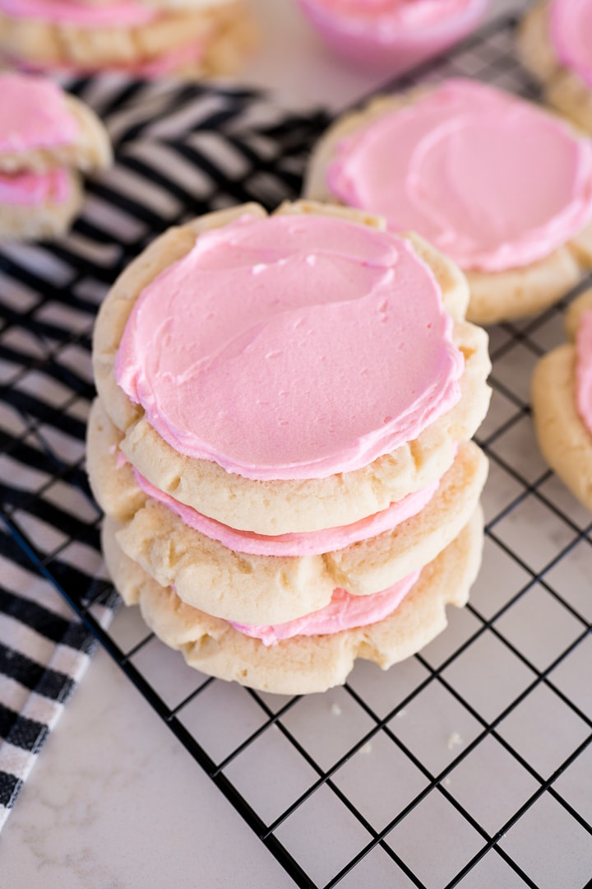

Crumbl Sugar Frosting Cookie

Description
Crumbl is a cookie shop that has been popping up all over Utah, and now popping up across the whole country. They are known for their HUGE but insanely delicious cookies. If you don’t have a Crumbl near you, or if your crumbl addiction is starting to break the bank, I have the solution for you! These copycat cookies are just like the real thing, but so much more affordable.
One of the best things about a crumbl sugar cookie is the SIZE. They are absolutely GIANT! You can make them smaller if you would like, but we usually just cut them in half or fourths. But no judgement here if you tackle one of these bad boys yourself. I guarantee you will want to!
Ingredients
Sugar Cookies
- 1 cup salted butter
- 1 cup granulated sugar
- 2 eggs
- 1 tsp vanilla extract
- 1/2 tsp almond extract
- 3 cups all purpose flour
- 2 tsp baking powder
Sweet Almond Icing
- 1/2 cup salted butter softened
- 3 cups powdered sugar
- 1 tsp almond extract
- 1-3 tbsp milk
- neon pink food coloring (optional)
Instructions
- Preheat oven to 350°.
- While the oven is preheating make the cookie dough. Cream together the butter and sugar until light and fluffy.
- Scrape the sides, add in the eggs, vanilla extract and almond extract. Beat until mixed.
- Scrape the sides and add in the flour, & baking powder. Mix until thoroughly combined.
- Scoop out 1/4 cup of dough and roll into a ball. Repeat with remaining dough.
- Flatten the cookie dough by gently pressing the bottom of a drinking glass or measuring cup down on the center of the cookie dough.
- Repeat with remaining dough. The cookies will spread so make sure to leave room. I tend to only put 6 cookies per pan.
- Bake at 350° for 9-11 minutes or until the centers of the cookies have puffed up and are no longer glossy.
- Allow them to cool on the cookie sheet.
- While the cookies are cooling, make the frosting.
- Cream the butter until smooth. Slowly add in the powdered sugar, almond extract and milk until smooth and creamy.
- Add 4 drops of neon pink food coloring, if desired.
- Spread on the still slightly warm cookies, this will melt the frosting slightly which will give it the nice smooth finishing look.
- Once the cookies have completely cooled, chill in the fridge until ready to serve. These cookies are served chilled.
Nutrition
Calories: 513kcal | Carbohydrates: 71g | Protein: 4g | Fat: 24g | Saturated Fat: 15g | Cholesterol: 88mg | Sodium: 216mg | Potassium: 132mg | Fiber: 1g | Sugar: 46g | Vitamin A: 749IU | Calcium: 53mg | Iron: 2mg